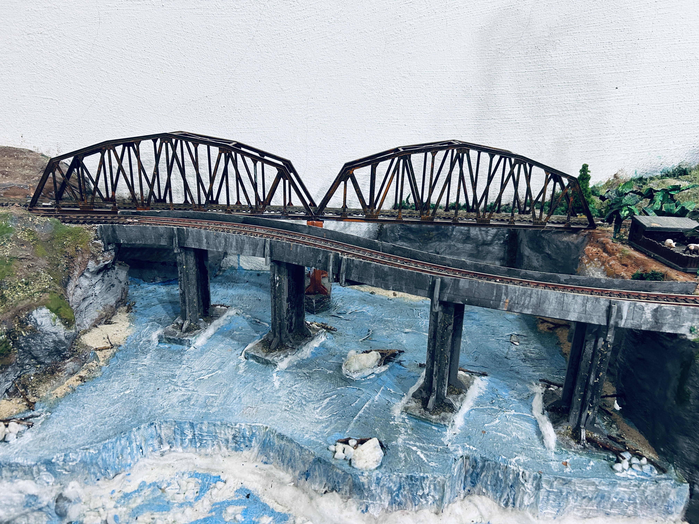

No fundo, na parede branca, será aplicado uma foto projetada pelo ChatGPT que pode ser vista na imagem de abertura deste site.
As pontes foram envelhecidas procurando reproduzir os efeitos do tempo, com marcas de corrosão, fuligem e de chuva sobre a poeira acumulada.
Para a construção do rio, a base de madeira foi inicialmente pintada de azul. Depois da secagem, foi aplicada cola branca diluída em aproximadamente 50% de água e, sobre ela, papel higiênico. Antes da secagem completa, foi passado um pincel de cerdas duras no sentido contrário ao fluxo da água, formando relevos para simular as ondas.
Após a secagem, a superfície recebeu uma nova pintura com azul bastante diluído. Nos pontos mais altos das ondas, foi aplicado tinta branca para destacar a espuma. Glitter foi espalhado em alguns pontos para aumentar o efeito de brilho da água.
Atrás dos pilares das pontes, foi colocado pequenos galhos, simulando materiais carregados e acumulados pela correnteza. Algumas pedras brancas arredondadas foram distribuídas pelo leito e pelas margens. As pequenas quedas-d’água foram feitas com algodão e glitter, procurando reproduzir a espuma e o movimento da água.